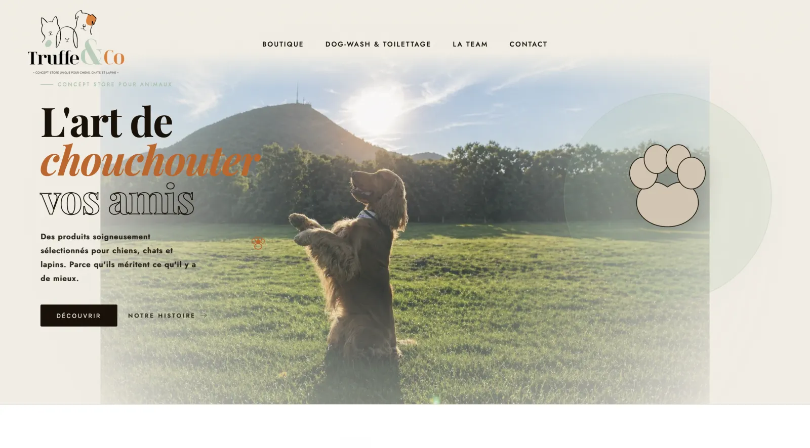
Stage, 2026, fait seul
Site e-commerce en production, avec caisse et stocks, paiement en ligne et livraison.
Développeur full stack
Étudiant en 3e année de BUT Informatique à Clermont-Ferrand, je cherche un stage de 18 semaines, du 15 février au 7 mai 2027 puis du 28 juin au 13 août 2027.

Stage, 2026, fait seul
Site e-commerce en production, avec caisse et stocks, paiement en ligne et livraison.
SAE, équipe de 3, en cours
Porter vers le mobile un outil qui génère des tests automatiques avec des agents IA.
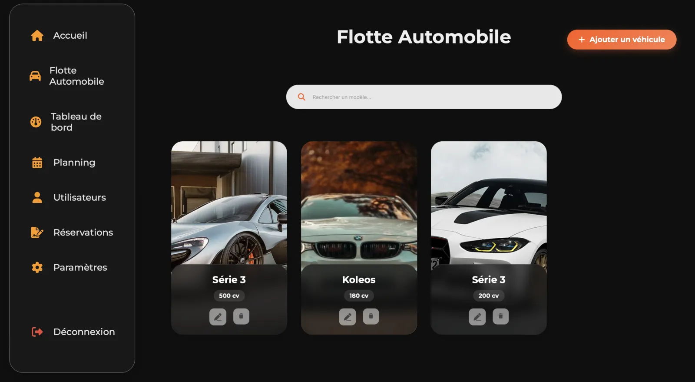
Chef d'équipe, 7 personnes
Gestion de location de véhicules : site web, appli Android, administration et API REST.
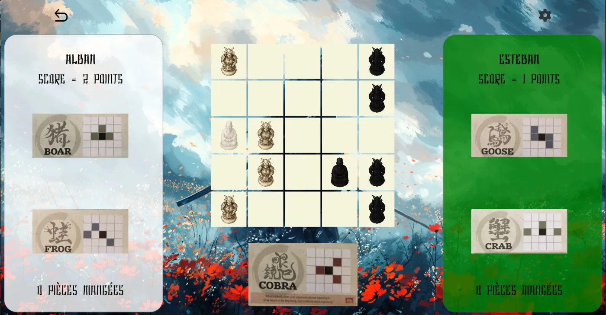
Jeu de stratégie en .NET MAUI, équipe de 3
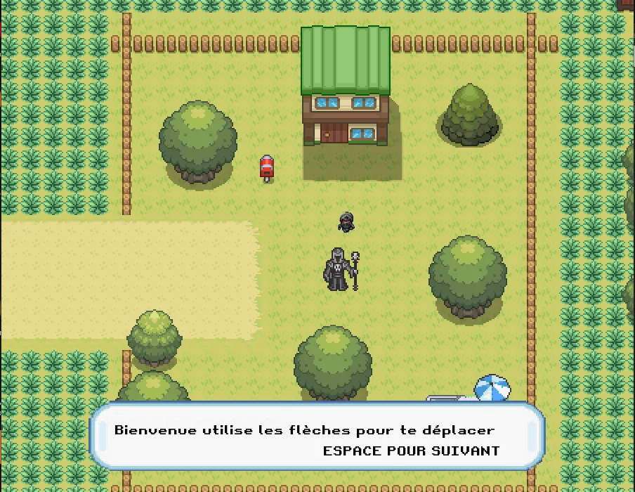
Jeu d'aventure en Pygame et Tiled, projet perso
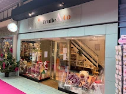
Truffe And Co, Clermont-Ferrand
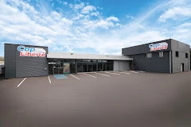
Cap Liberté
Job d'été de juin à août 2025, puis job étudiant le samedi de novembre 2025 à juin 2026.
IUT de Clermont-Ferrand, Université Clermont Auvergne
Développement web et mobile, WebServices, bases de données, gestion de projet en méthode agile.
Lycée Saint-Alyre, Clermont-Ferrand
AquaLoisirs
Je m'appelle Alban Tixier, je suis étudiant en informatique à l'IUT de Clermont-Ferrand. Ma deuxième année m'a permis d'acquérir des connaissances en WebServices et en développement d'applications web et mobiles, et d'améliorer mon relationnel en prenant la place de chef d'équipe.
Dans mon projet de deuxième année, j'ai dû me confronter aux exigences d'un client et utiliser les méthodes agiles pour mener le projet à bien, en respectant les coûts et les délais.
C'est ma plus grande passion, depuis mon plus jeune âge. J'aime tout ce qui touche de près ou de loin à l'informatique : le matériel comme le logiciel, les jeux vidéo, l'informatique embarquée. J'ai toujours été curieux de comprendre comment cela marche, et fasciné par tout ce qu'il est possible de faire avec.
Depuis mes plus jeunes années, j'ai toujours aimé les voitures. Ma curiosité m'a donné envie de comprendre comment ces pièces métalliques peuvent produire une telle puissance. Mais le plus important reste le plaisir de conduire, de ressentir des choses à travers la voiture.
Je joue du violon, du piano et de la guitare, et j'ai pratiqué le karaté pendant 8 ans.
Ce que j'écoute, ce que je joue au violon, les voitures qui me font rêver et les jeux qui m'ont marqué.
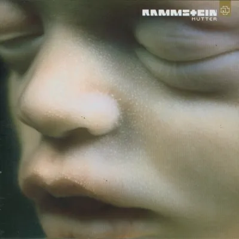
Metal
Rammstein
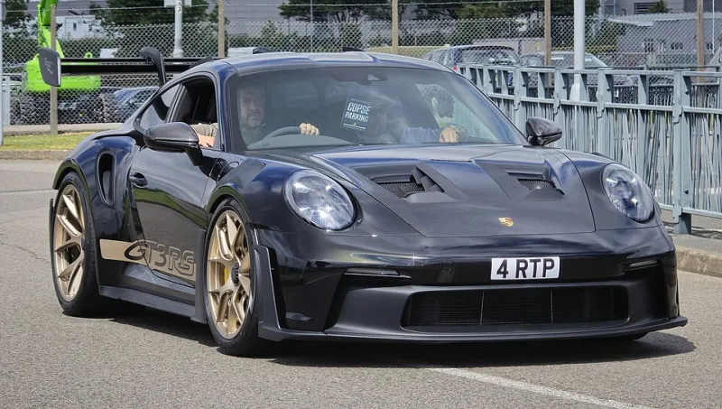
Voiture de rêve
Flat-6 4.0 L atmosphérique, 525 ch, 9 000 tr/min
Photo : Alexander Migl, CC BY-SA 4.0
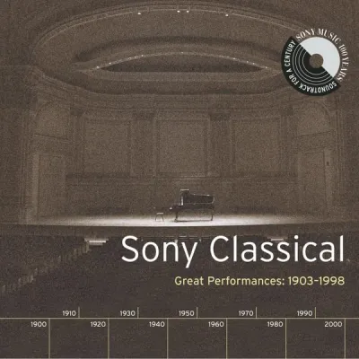
Au violon
John Williams
Enregistrement par Itzhak Perlman
Jeu vidéo
FromSoftware, 2022
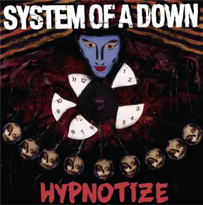
Hard rock
System Of A Down
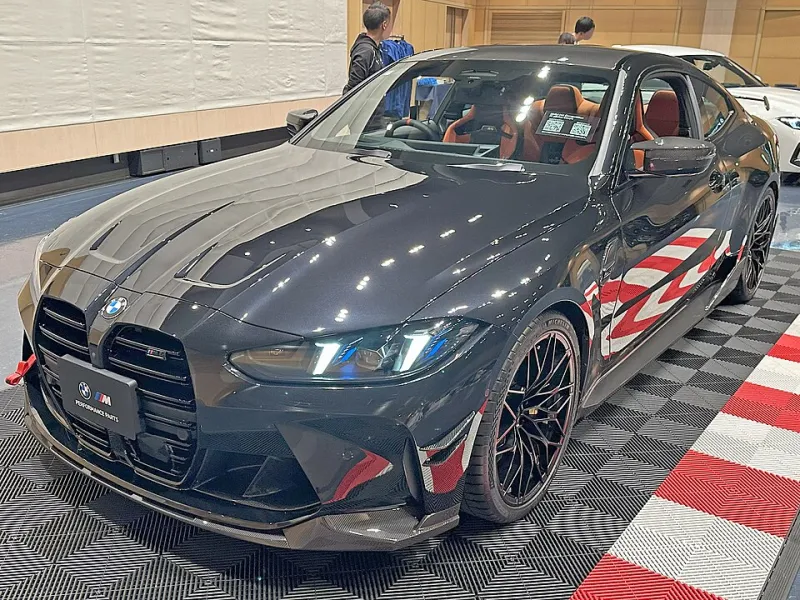
Voiture de rêve
6 cylindres en ligne 3.0 L biturbo, 530 ch
Photo : Alexander Migl, CC BY-SA 4.0
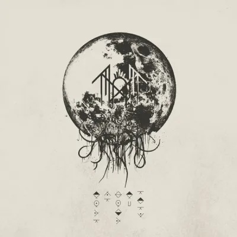
Hard rock
Sleep Token
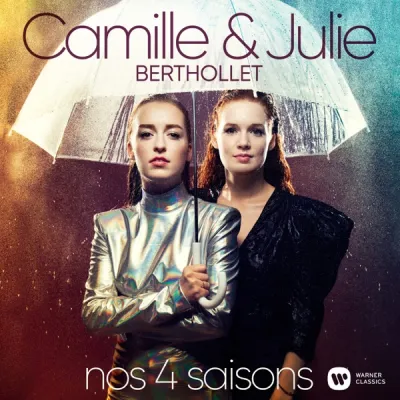
Au violon
Antonio Vivaldi
Enregistrement par Julie Berthollet
Jeu vidéo
Rockstar Games, 2018
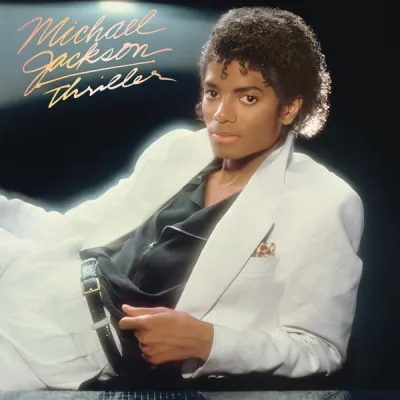
Pop
Michael Jackson
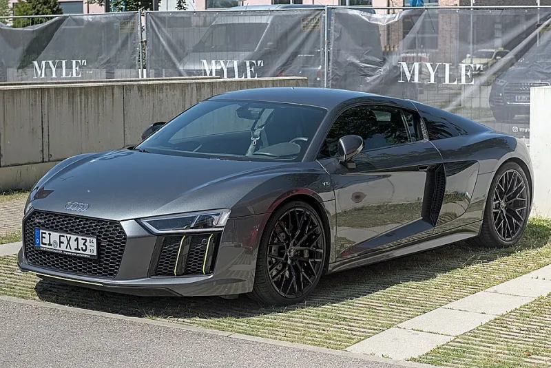
Voiture de rêve
V10 5.2 L atmosphérique, jusqu'à 620 ch
Photo : Alexander Migl, CC BY-SA 4.0
Rock
Falling In Reverse
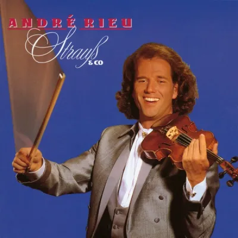
Au violon
Dmitri Chostakovitch
Enregistrement par André Rieu
Jeu vidéo
Riot Games, 2009
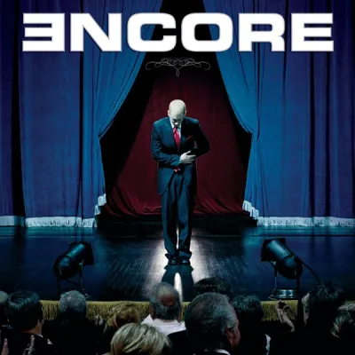
Hip-hop/Rap
Eminem
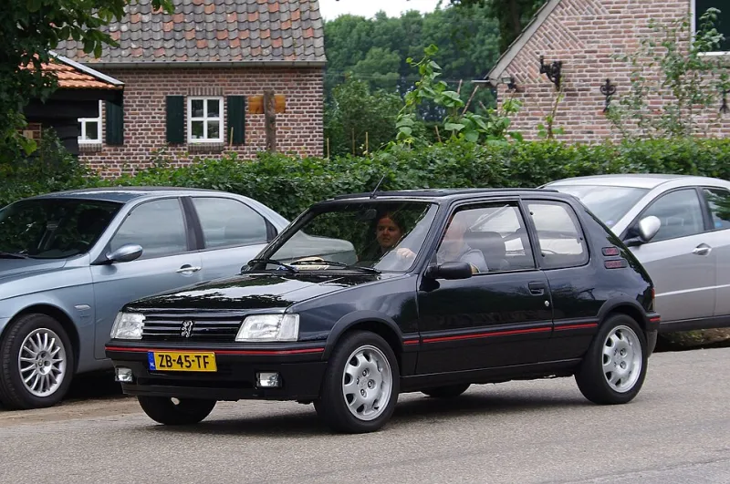
Voiture de rêve
4 cylindres 1.9 L, 130 ch, moins d'une tonne
Photo : Rutger van der Maar, CC BY 2.0
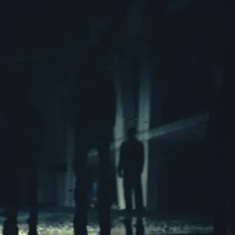
Metal
Bad Omens
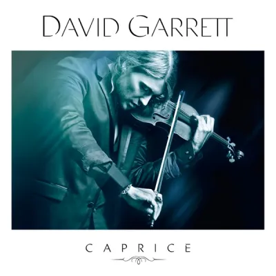
Au violon
Niccolò Paganini
Enregistrement par David Garrett
Jeu vidéo
Rockstar Games
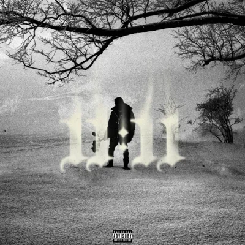
Hip-hop/Rap
Josman
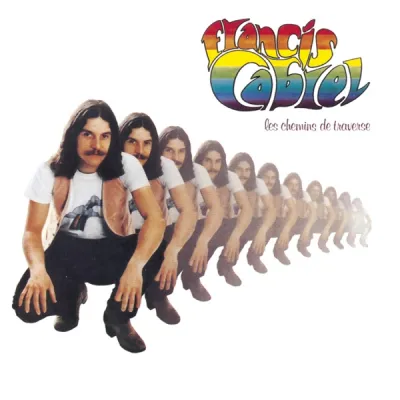
Variété française
Francis Cabrel
Quelques petits jeux autour de mes deux passions, la musique et la voiture.
Chargement de la platine…
Écrivez-moi, je réponds rapidement.